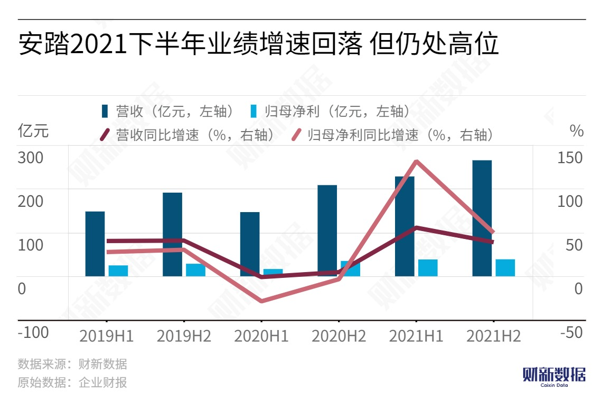
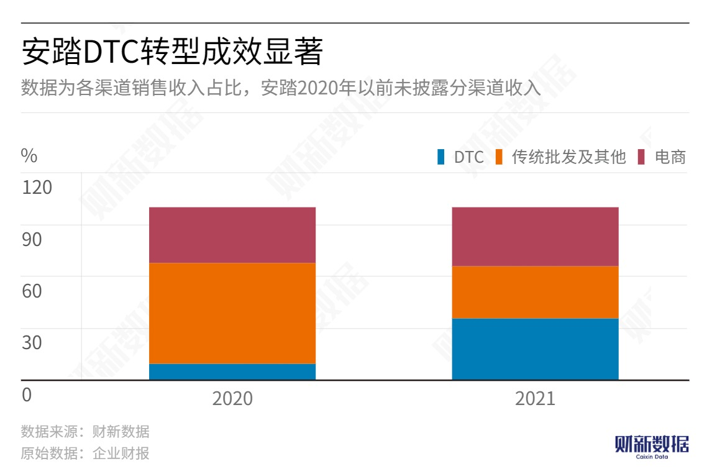
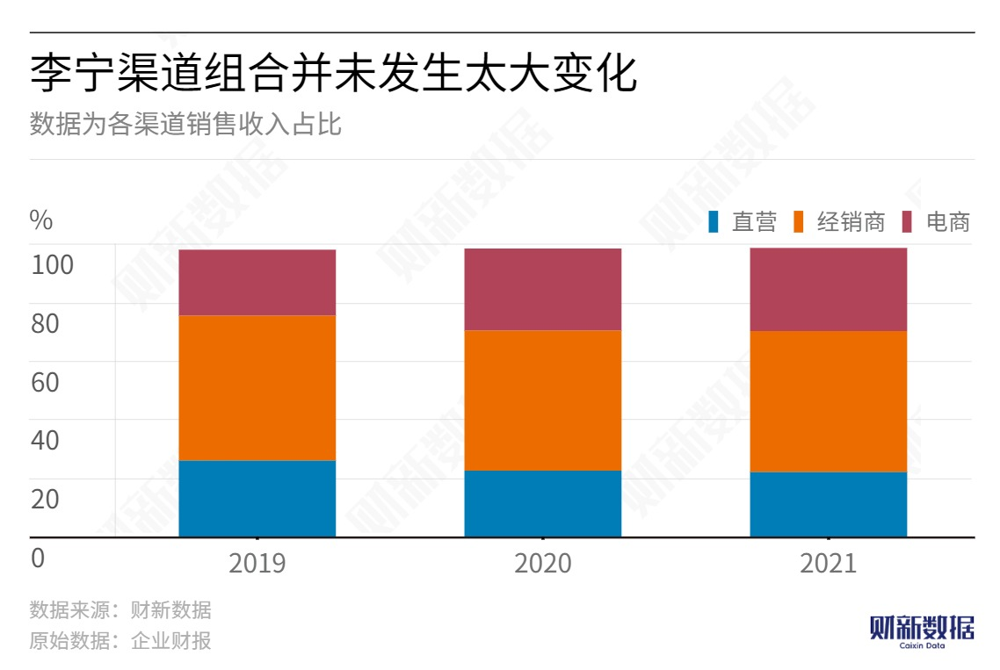
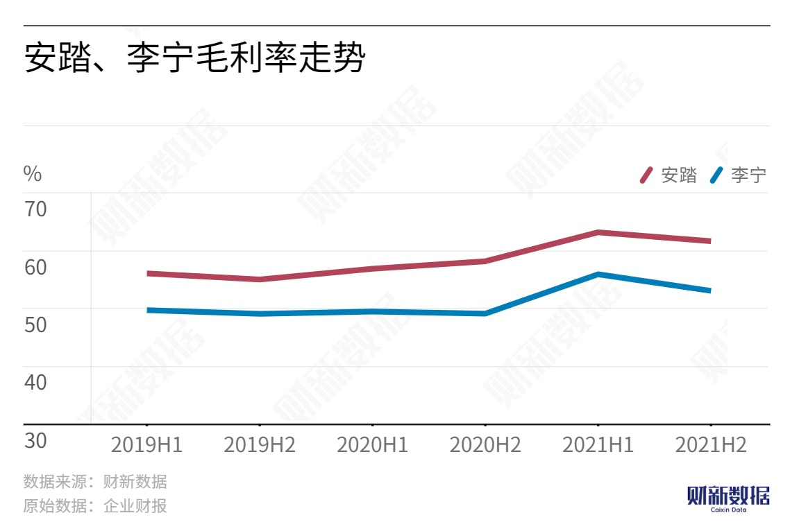

Leading Domestic Sports and Casual Apparel Brands ANTA and Li-Ning Experienced Significant Performance Improvement Last Year, but Growth Slowed in the Second Half and Stock Prices Have Been Declining Since Q3.
According to the latest financial report, ANTA's revenue for 2021 was RMB 49.328 billion, a YoY increase of 38.90%. Compared to Nike Greater China's sales in the 2021 fiscal year, which were only RMB 1.9 billion higher, ANTA's revenue surpassed Adidas Greater China and Lululemon's full-year revenue for the 2021 fiscal year, which were RMB 32.161 billion and RMB 39.7 billion, respectively. Li-Ning's full-year revenue was RMB 22.572 billion, a YoY growth rate of 56.13%.
The DTC (Direct-To-Customer) transformation was the main reason for ANTA's performance improvement. The DTC transformation mainly targeted external channels, significantly reducing the proportion of distributors, increasing direct sales efforts, reducing intermediate links, and expanding profit margins.
Previously, ANTA's main wholesale distribution model involved selling products wholesale to distributors for exclusive distribution. In 2020, there were too many uncertain factors affecting offline stores due to the pandemic, and distributor purchases led to strong short-term market-oriented positioning.
As ANTA's offline store expansion space became saturated, the group began to consider DTC transformation. In the 18 regions where the DTC transformation was launched, ANTA adopted a mixed operating model, which involved recovering distributor stores and converting them into group-owned stores, while retaining some high-performing franchise stores.
Unlike ANTA's "single focus, multiple brands" strategy, Li-Ning continues to adhere to its "single brand, multiple categories" approach, developing towards both specialization and trendiness. During the reporting period, the company's revenue from sports fashion products grew at the fastest rate of 71%, accounting for 43% of total revenue. The creativity of this category is well received by young consumers. In terms of specialization, the company's basketball and running series had revenue growth rates of 53% and 46%, respectively.
Li-Ning stated in the financial report that the discount rates for new products in both online and offline channels have improved, and the proportion of new product sales has continued to increase, promoting the improvement of the company's profit margin.